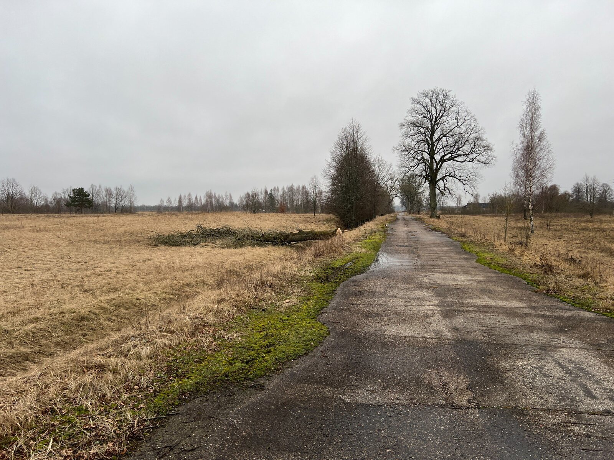
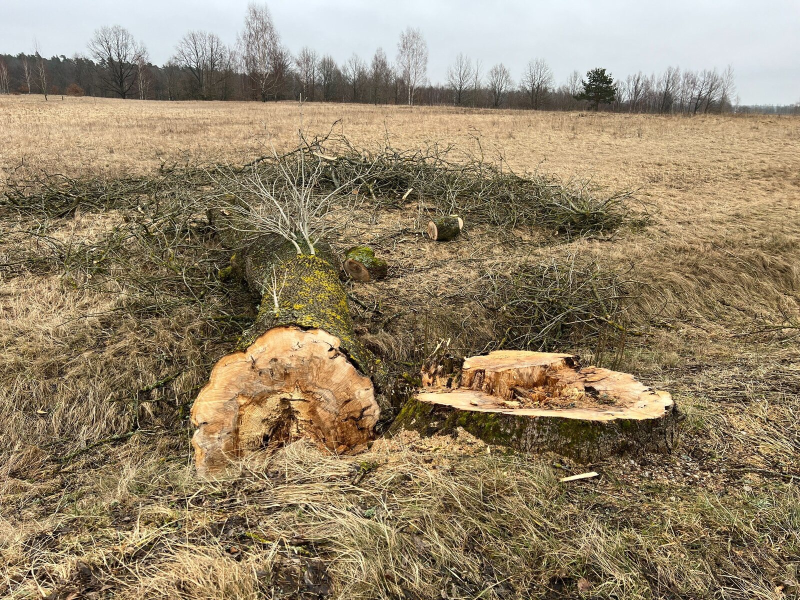

Факты вырубки придорожных деревьев
Зафиксированы факты спиливания придорожных деревьев вдоль поселковой дороги.
Обращение в процессе подготовкиОписание ситуации
Вдоль поселковой дороги на улице Речной ранее находились придорожные зелёные насаждения, включая ивы. На текущий момент зафиксированы факты спиливания деревьев и утраты части придорожной зелёной полосы.
Зафиксированные признаки
- спиливание придорожных деревьев;
- утрата части зелёных насаждений вдоль дороги;
- изменение исторического облика дороги;
- снижение защитной функции зелёной полосы.
Значение насаждений
Придорожные деревья формируют ландшафт, защищают грунт от размыва, удерживают влагу, создают тень и сохраняют исторический облик территории.
Фотоматериалы


Открыть полный архив оригинальных фотоматериалов
Документы
Обращение находится в процессе подготовки.
Статус
Обращение: в процессе подготовки
Дата фиксации: 22.04.2026
Статус: материалы собираются